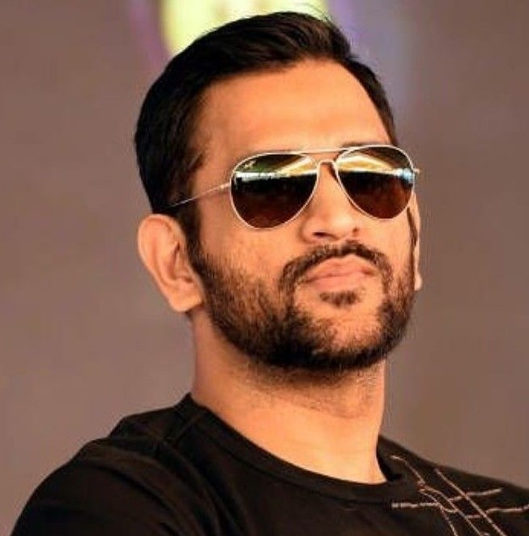
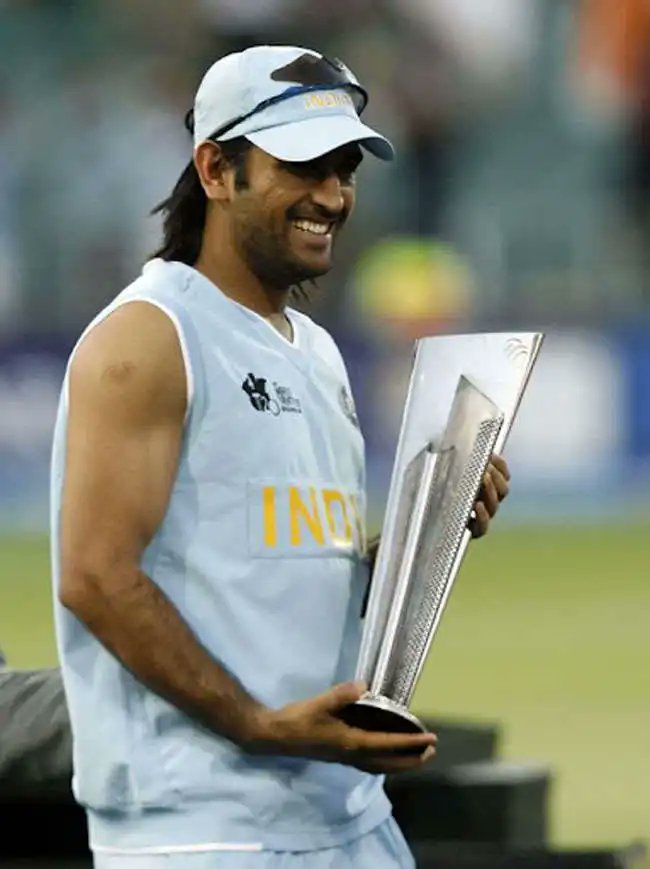
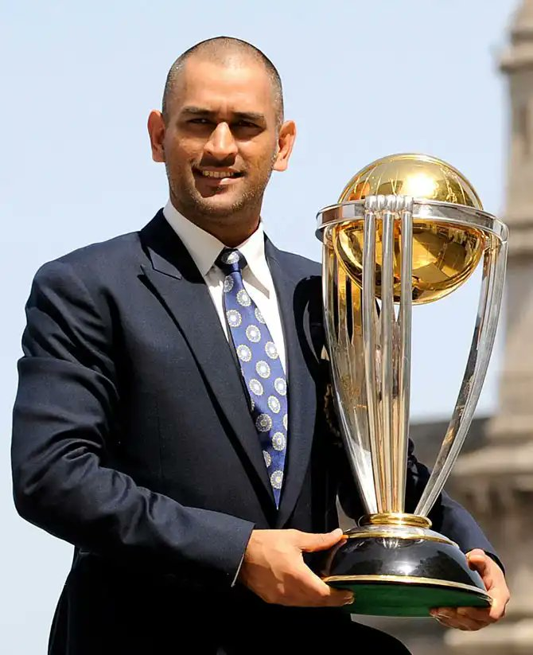
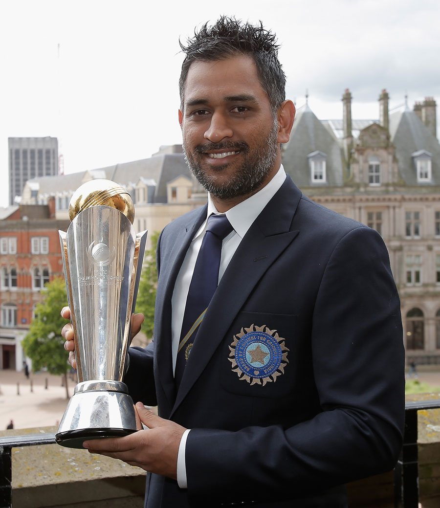

Mahendra Singh Dhoni
Debut:23 December 2004
Retired: 15 August 2020
How M.S.Dhoni became the heartbeat of every ICT fan?
Less than thirty years before that enchanting Saturday night when Ravi Shastri’s voice rang through
television sets all over India, when even the spunky and exuberant Indian youth showed more interest
in an old-school CRT television at a local chai ki dukaan than the dance-floor at a pub, a
pump-operator in Ranchi awaited the birth of his third child.
'Dhoniiiii finishes off in style. A magnificent strike into the crowd. India lift the World Cup after 28 years. The party's started in the dressing room. And it’s an Indian captain, who’s been absolutely magnificent, in the night of the final'.
Any cricket fan worth his salt just read this in Ravi Shastri's most dramatic voice, as Mahendra Singh Dhoni enchanted the Wankhede on the night of 2nd April 2011.



Records
- The only Captain in cricketing history to win ICC World Cup, Champions Trophy, and ICC T20 World Cup.
- MS Dhoni holds the record for the highest number of dismissals by an Indian wicket-keeper in ODI- 444 (321 catches, 123 stumpings).
- The only Indian wicket-keeper to make 3 stumpings in an ODI innings. And he has done it 3 times in his career.
- 3rd oldest batsman to reach 10000 marks in ODIs, after Tillakaratne Dilshan and Brian Lara.
- Dhoni became the first Indian batsman to score more than 200 sixes.
and many more.....To know more
Awards
- Padma Bhushan - 2018
- Padma Shri - 2009
- Major Dhyanchand Khel Ratna award - 2007,2008
- ICC Award for Spirit of Cricket - 2011
- ICC Men's ODI Team of the Year - 2014,2013,2012,2009,2008
- ICC ODI Player of the Year - 2009,2008
and many more.....To know more
In Media
- A movie was made based on Dhoni's life, from his childhood to the 2011 Cricket World Cup, titled M.S. Dhoni: The Untold Story, with Sushant Singh Rajput in the titular role
- He was in the Disney+ Hotstar 2019 docudrama Roar of the Lion (web series), This five-episode docudrama tried to unravel the darkest phase of MS Dhoni's cricketing career, involving the ban on Chennai Super Kings due to the illegal betting activities by the team's main official, Gurunath Meiyappan
- The Dhoni Touch: unraveling the enigma that is Mahendra Singh Dhoni, a book by Bharat Sundaresan